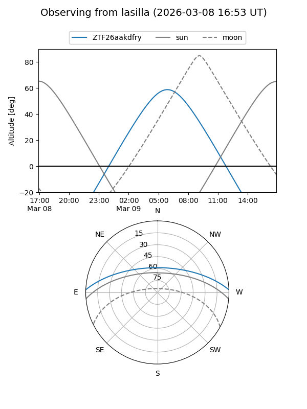
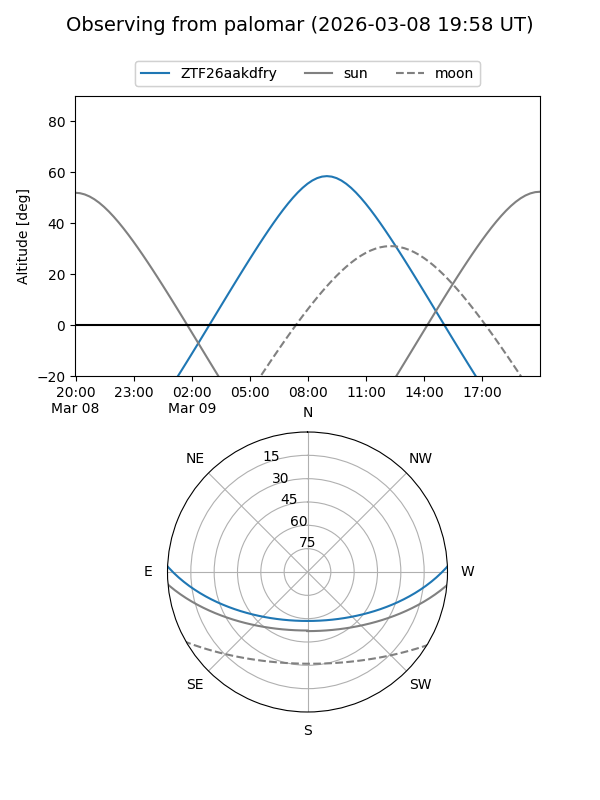

ZTF26aakdfry
Target ZTF26aakdfry at 2026-03-09 07:39
Aliases and brokers:
FINK: link
Lasair: link
ALeRCE: link
alt names
ZTF26aakdfry (ztf,fink_ztf)
Coordinates:
equatorial (ra, dec) = 184.4060,+2.03005
equatorial (HMS+DMS) = 12:17:37.44,+02:01:48.19
galactic (l, b) = (283.6191,+63.62671)
Flags:
Photometry:
last ztfg=20.04
1 ztfg detections
Lightcurve
Visibility


Additional plots